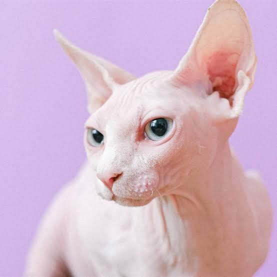

Marketplace
Contacto



Nombre: Bills
Bills es un hermoso gatito que está buscando una familia que le brinde cariño, atención y un hogar donde pueda sentirse seguro, protegido y querido.
Edad: 3 años
Con tres años de edad, Bills es un gato adulto que necesita compañía, cuidados y un ambiente tranquilo. Está en una etapa en la que puede disfrutar de la compañía de su familia y crear vínculos duraderos con quienes lo rodean.
Especie: Gato egipcio
El gato egipcio, también conocido como Sphynx, es una raza reconocida por su particular apariencia y la ausencia de pelaje. Son gatos curiosos, inteligentes y sociables que necesitan atención especial para cuidar su piel y mantenerse saludables.
Estado de salud
Bills se encuentra en buen estado de salud. Según la información proporcionada, no presenta enfermedades ni problemas de salud conocidos.
Sobre su adopción
Bills busca una familia responsable que esté dispuesta a ofrecerle un hogar lleno de cariño, protección y buenos cuidados. Necesita personas que puedan dedicarle tiempo, atender sus necesidades y brindarle un ambiente cómodo y seguro durante toda su vida.